Show the code
pacman::p_load(tidyverse,
sf,
ggstatsplot,
tmap,
knitr,
GWmodel)Liang Xiuhao Rydia
September 16, 2024
September 16, 2024
Short cut to In-class Ex 4
It is a way to define spatial neighbourhood.
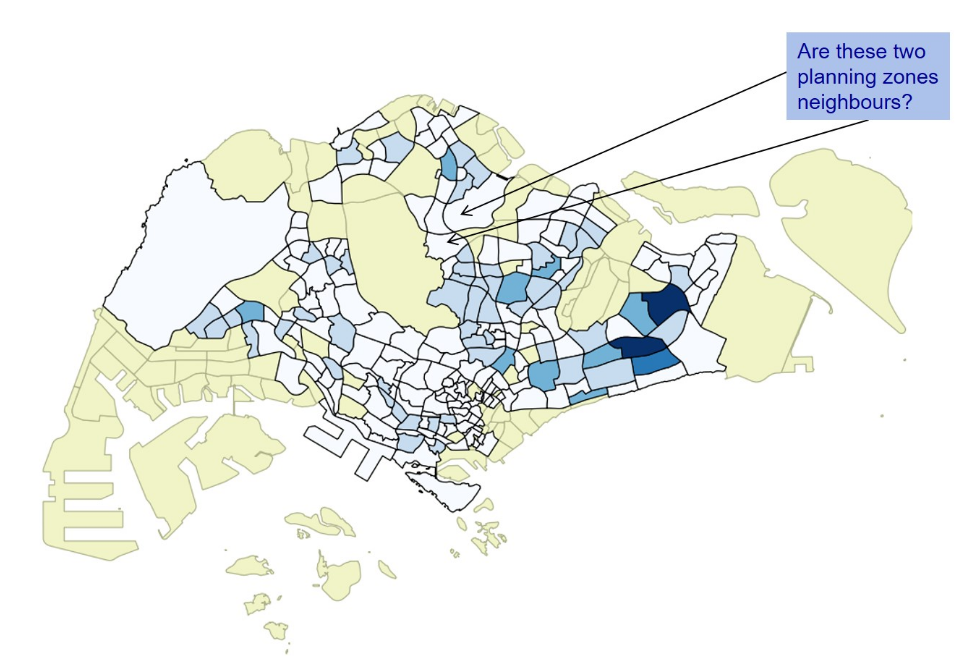
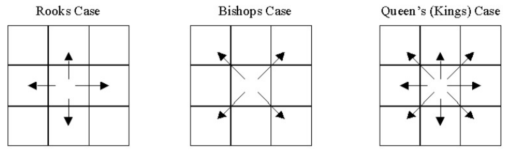
Refer to Hands on Ex 4 - 8.5.3.1 and 8.5.3.2:
| Queen’s | Rook’s (differences in blue circle) |
|---|---|
| 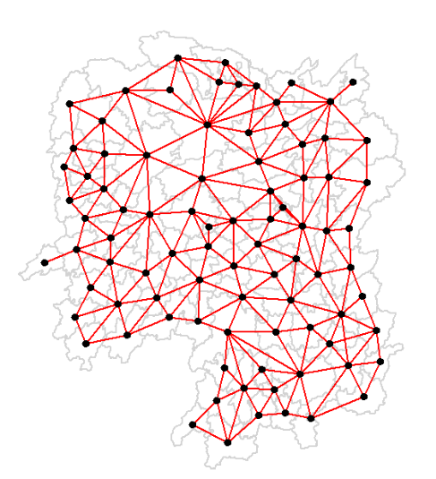 | 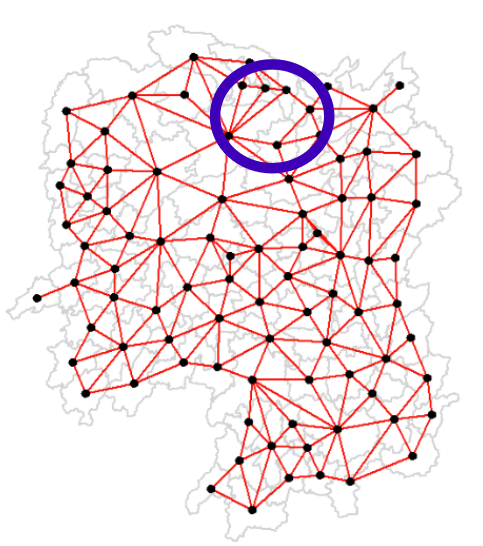 |
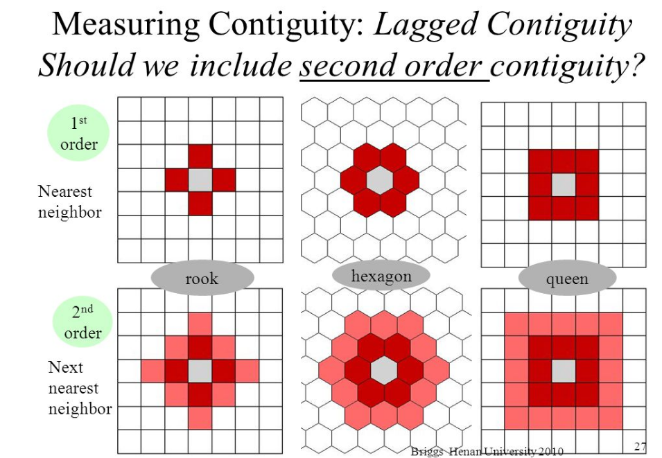
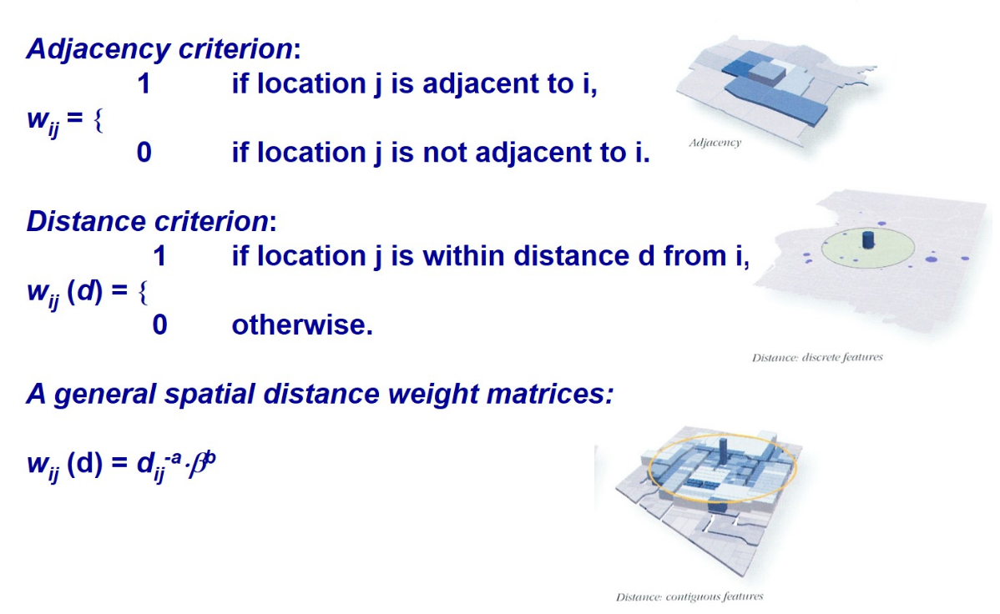
A better measure of spatial weights will be using the third method, a general spatial distance weight matrices, where no boundaries were set (like distance criterion).
The weight matrix below is constructed using Queen’s method.
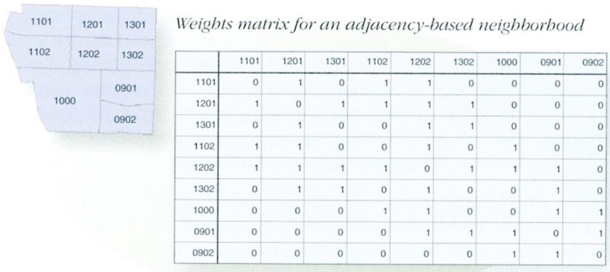
Quiz: With reference to the figure above, list down the neighbour(s) of area 1202 using Rook case.
Neighbour of 1202 using Rook’s case:
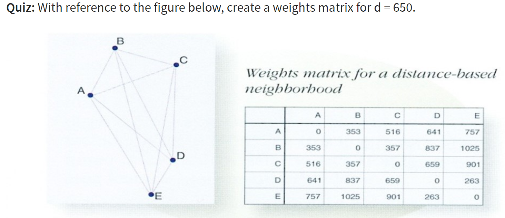
Answer: (all distance, d >650, will become 0 in value)
| A | B | C | D | E | |
|---|---|---|---|---|---|
| A | 0 | 353 | 516 | 641 | 0 |
| B | 353 | 0 | 357 | 0 | 0 |
| C | 516 | 357 | 0 | 0 | 0 |
| D | 641 | 0 | 0 | 0 | 263 |
| E | 0 | 0 | 0 | 263 | 0 |
In practice, row-standardised weights instead of spatial weights will be used.
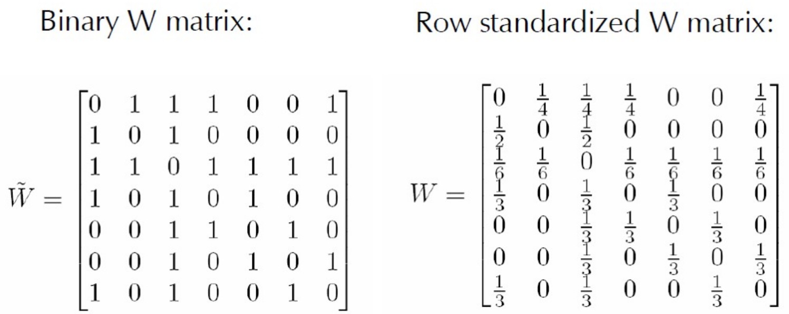
Spatial lag with row-standardised weights.
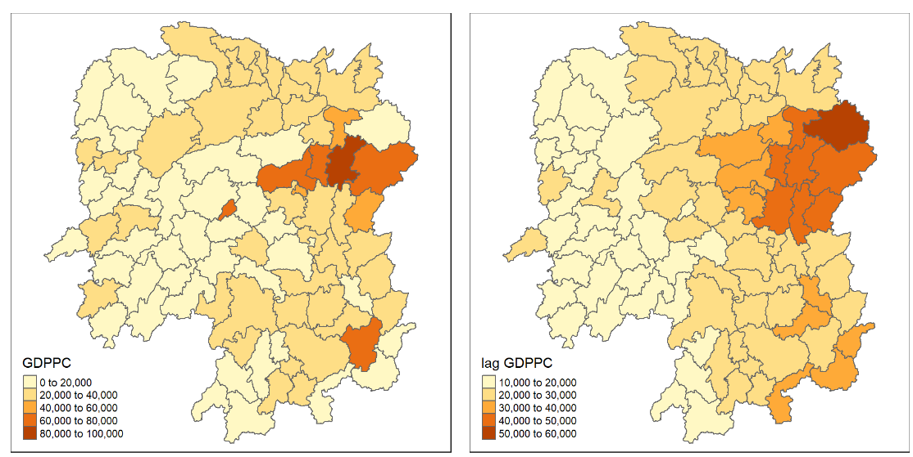
Lag GDPCC smooth out the value, and help us identify the difference of the lighter western region and the darker regions to the north-east.
Ideally, we want to know which areas are with values that are statistically significant. Having 2 neighbours vs 6 neighbours? Next lesson!
The spatial window sum uses and includes the diagonal element. (Include self = lag_sum)
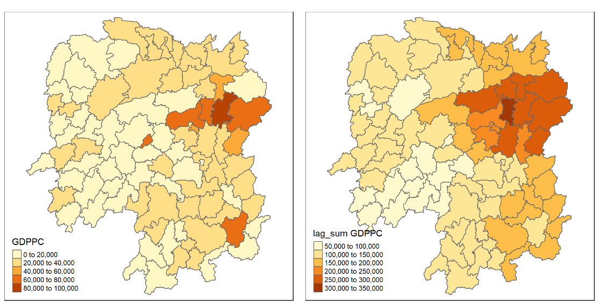
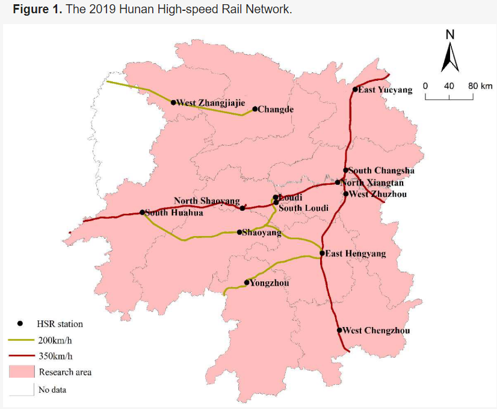
Centroid distance vs Network distance (e.g. shortest path)
It may take longer time to compute all possible shortest path.
Centroid distance generally simpler to calculate and it is quite similar to Network distance after aggregation.
However, there are many cases that network distance is a better measure.
Loading required packages using the code chunk below:
Reading layer `Hunan' from data source
`C:\rydialiang\isss626-aug24\In-class Exercise\In-class_Ex04\data\geospatial'
using driver `ESRI Shapefile'
Simple feature collection with 88 features and 7 fields
Geometry type: POLYGON
Dimension: XY
Bounding box: xmin: 108.7831 ymin: 24.6342 xmax: 114.2544 ymax: 30.12812
Geodetic CRS: WGS 84Usually in polygon.
If there’s island apart from mainland, there might be cases of multi-polygon.
We need to final potential Unique Identifier to do the left_join().
Usually we have to define the join field.
For example, we can use NAME_3 for hunan_sf and County for hunan2012 to do the relational join.
We need to make sure that the cells has the same values, including upper and lower case.
The case below, it is already tidied up and we know exactly what information/columns we need to sift out, by using select().
GWmodel is presently built around the older sp and
Cross-validation:
Adaptive bandwidth: 62 CV score: 15515442343
Adaptive bandwidth: 46 CV score: 14937956887
Adaptive bandwidth: 36 CV score: 14408561608
Adaptive bandwidth: 29 CV score: 14198527496
Adaptive bandwidth: 26 CV score: 13898800611
Adaptive bandwidth: 22 CV score: 13662299974
Adaptive bandwidth: 22 CV score: 13662299974 62 ….. 22 are number of neighbours.
stop when the figure (GDPPC) don’t change much.
AIC
Adaptive bandwidth (number of nearest neighbours): 62 AICc value: 1923.156
Adaptive bandwidth (number of nearest neighbours): 46 AICc value: 1920.469
Adaptive bandwidth (number of nearest neighbours): 36 AICc value: 1917.324
Adaptive bandwidth (number of nearest neighbours): 29 AICc value: 1916.661
Adaptive bandwidth (number of nearest neighbours): 26 AICc value: 1914.897
Adaptive bandwidth (number of nearest neighbours): 22 AICc value: 1914.045
Adaptive bandwidth (number of nearest neighbours): 22 AICc value: 1914.045 AICc values in kilometers (?)
both CV and AIC provide same results.
CV:
Fixed bandwidth: 357.4897 CV score: 16265191728
Fixed bandwidth: 220.985 CV score: 14954930931
Fixed bandwidth: 136.6204 CV score: 14134185837
Fixed bandwidth: 84.48025 CV score: 13693362460
Fixed bandwidth: 52.25585 CV score: Inf
Fixed bandwidth: 104.396 CV score: 13891052305
Fixed bandwidth: 72.17162 CV score: 13577893677
Fixed bandwidth: 64.56447 CV score: 14681160609
Fixed bandwidth: 76.8731 CV score: 13444716890
Fixed bandwidth: 79.77877 CV score: 13503296834
Fixed bandwidth: 75.07729 CV score: 13452450771
Fixed bandwidth: 77.98296 CV score: 13457916138
Fixed bandwidth: 76.18716 CV score: 13442911302
Fixed bandwidth: 75.76323 CV score: 13444600639
Fixed bandwidth: 76.44916 CV score: 13442994078
Fixed bandwidth: 76.02523 CV score: 13443285248
Fixed bandwidth: 76.28724 CV score: 13442844774
Fixed bandwidth: 76.34909 CV score: 13442864995
Fixed bandwidth: 76.24901 CV score: 13442855596
Fixed bandwidth: 76.31086 CV score: 13442847019
Fixed bandwidth: 76.27264 CV score: 13442846793
Fixed bandwidth: 76.29626 CV score: 13442844829
Fixed bandwidth: 76.28166 CV score: 13442845238
Fixed bandwidth: 76.29068 CV score: 13442844678
Fixed bandwidth: 76.29281 CV score: 13442844691
Fixed bandwidth: 76.28937 CV score: 13442844698
Fixed bandwidth: 76.2915 CV score: 13442844676
Fixed bandwidth: 76.292 CV score: 13442844679
Fixed bandwidth: 76.29119 CV score: 13442844676
Fixed bandwidth: 76.29099 CV score: 13442844676
Fixed bandwidth: 76.29131 CV score: 13442844676
Fixed bandwidth: 76.29138 CV score: 13442844676
Fixed bandwidth: 76.29126 CV score: 13442844676
Fixed bandwidth: 76.29123 CV score: 13442844676 AIC
Fixed bandwidth: 357.4897 AICc value: 1927.631
Fixed bandwidth: 220.985 AICc value: 1921.547
Fixed bandwidth: 136.6204 AICc value: 1919.993
Fixed bandwidth: 84.48025 AICc value: 1940.603
Fixed bandwidth: 168.8448 AICc value: 1919.457
Fixed bandwidth: 188.7606 AICc value: 1920.007
Fixed bandwidth: 156.5362 AICc value: 1919.41
Fixed bandwidth: 148.929 AICc value: 1919.527
Fixed bandwidth: 161.2377 AICc value: 1919.392
Fixed bandwidth: 164.1433 AICc value: 1919.403
Fixed bandwidth: 159.4419 AICc value: 1919.393
Fixed bandwidth: 162.3475 AICc value: 1919.394
Fixed bandwidth: 160.5517 AICc value: 1919.391 Fixed distance (kernel) produce vastly different results.
Distance will provide more variability.
Same location but different methods, bandwidth of neighbours differs.
remember to ensure the arguments for kernel, adaptive, longlat, must be the same as the chosen method, CV or AIC.
the resulting object is gwss class.
We can access the data table by clicking into the document icon to the right of the “data” attribute.
Accessing gwstat:
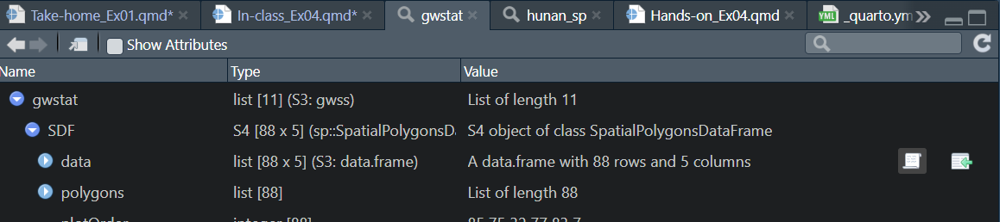
Accessing SDF data table:
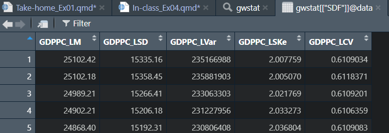
This data table is calculated using 22 neighbour (based on AIC, adaptive kernel)
Extracting the data table as df:
cbind() is used to append the newly derived data.frame onto hunan_sf sf data.frame.
cannot work if we do sorting prior to this step.
works without unique identifier, given that the sequence of the data did not change.
The Geographically Weighted Mean
tmap_mode("plot")
tm_shape(hunan_gstat) +
tm_fill("GDPPC_LM",
n = 5,
style = "quantile") +
tm_borders(alpha = 0.5 ) +
tm_layout(main.title = "Distribution of geographically weighted mean",
main.title.position = "center",
main.title.size = 0.9,
legend.text.size = 0.5,
legend.height = 1.0,
legend.width = 1.0,
frame = TRUE)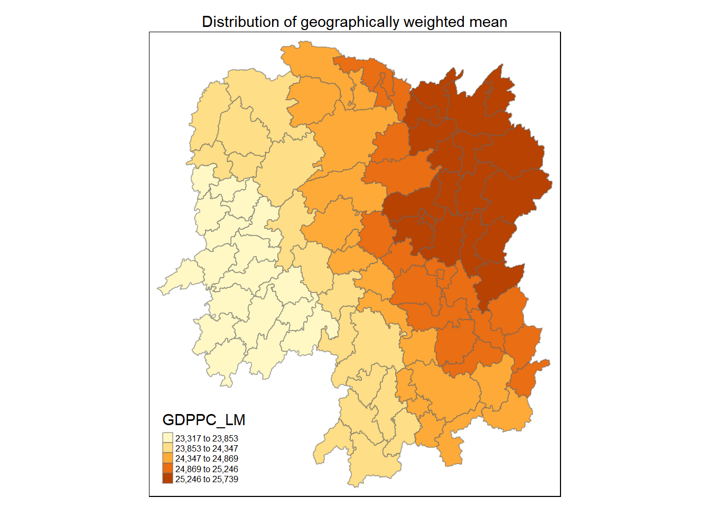